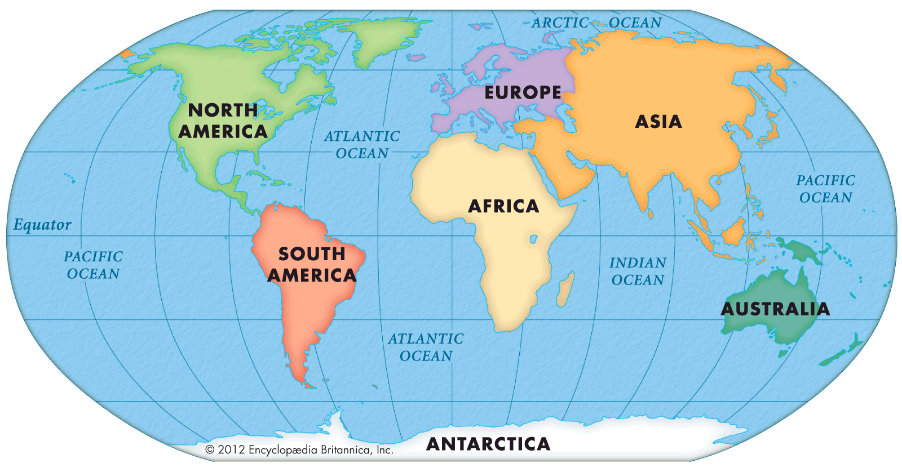

Continents
A continent is one of Earth’s seven main divisions of land. The continents are, from largest to smallest: Asia, Africa, North America, South America, Antarctica, Europe, and Australia.When geographers identify a continent, they usually include all the islands associated with it. Japan, for instance, is part of the continent of Asia. Greenland and all the islands in the Caribbean Sea are usually considered part of North America.
If you could visit Earth as it was millions of years ago, it would look very different. The continents have not always been where they are today. About 480 million years ago, most continents were scattered chunks of land lying along or south of the Equator. Millions of years of continuous tectonic activity changed their positions, and by 240 million years ago, almost all of the world’s land was joined in a single, huge continent. Geologists call this supercontinent Pangaea, which means “all lands” in Greek.

Africa, Antarctica, Australia
Antarctica is the highest, driest, coldest and windiest continent on Earth.
Africa is the world's hottest continent, and the world's second driest continent.
Australia is the smallest continent and the only one in the southern hemisphere.
North and South America
North America is the third largest continent in size and the fourth largest when we consider population.
Many people would love to know that South America has a rich biodiversity.